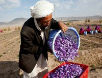

Saffron زعفران
Content

- Saffron is a high value crop and consequently attracts a lot of interest. Saffron Production Production has traditionally been primarily in Herat, although in recent years many development organizations have spearheaded efforts to produce it in other regions of the country. Care must be taken in recommending it due to its very specialized production and postharvest handling practices as well as marketing challenges.
Problems and Opportunities
- Priority problems for saffron include lack of understanding of best management practice: optimal bulb weight and size at planting, spacing between plants, climate suitability, water requirements, processing (i.e. harvesting when stigma is white instead of red); lack of research regarding adaption of saffron to different regions of Afghanistan; and lack of market opportunities.
- Priority opportunities for saffron include increased awareness of best practices, research on climate adaptation, and improved market opportunities.
- These problems and opportunities are based on the Saffron Production Manual by Kabul University Faculty of Agriculture.
Overview
- Saffron Overview Info Sheet (UC Davis)
Production
- Saffron Production and Processing Manual English and دری (ICARDA and DACAAR)
- Seed and Seed Systems Webpage
Postharvest
- Marketing Manual (WSU)